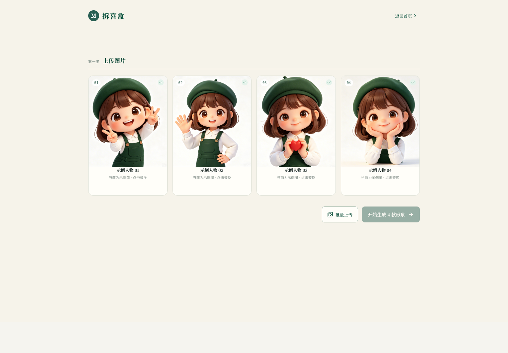
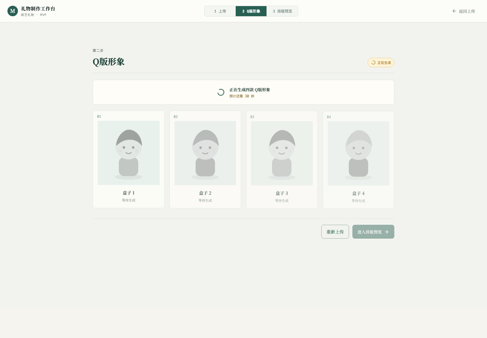
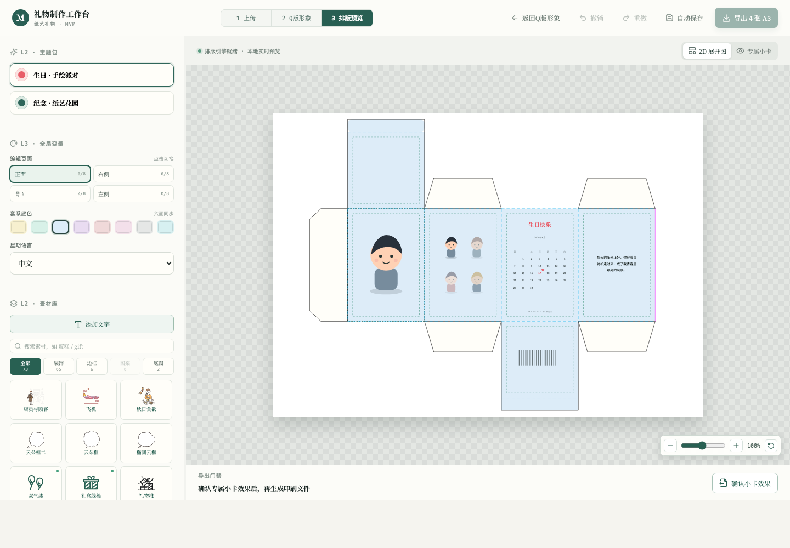

把包装结构转为可编辑坐标系统
基于固定纸张规格和面板边界定义包装展开图，使用户元素能以统一坐标、缩放和旋转规则落入对应区域。
Product · Full-stack · AI workflow
将四张人物照片转化为风格统一的 Q 版形象，并完成可编辑包装盒设计与 A3 印刷文件交付。
拆喜盒解决“为重要的人做一份有记忆点的实体礼物”这一创作门槛：用户不需要懂绘图或包装设计，只要上传四张照片，即可获得一组统一角色形象和一套可直接印刷、裁切、折叠的定制纸艺礼物。
我把复杂的创作流程拆成“上传 → Q版形象 → 排版预览”三步，让用户始终知道当前状态、下一步和可回退路径。编辑工作台将高频操作集中在左侧，而把包装效果作为中心视觉焦点。


工作台不是静态预览，而是一套基于 React、TypeScript、Zustand 和 SVG 的编辑系统。包装盒的四个可编辑面、人物的移动/缩放/旋转、素材层级、文本字体与颜色都可实时更新，并同步映射到实际展开图。

基于固定纸张规格和面板边界定义包装展开图，使用户元素能以统一坐标、缩放和旋转规则落入对应区域。
使用 jsPDF 与 svg2pdf 输出横向 A3；在导出前将字体转为路径，避免印刷环境缺字或字体替换。
我将生成链路设计成异步任务，避免 Web 请求被模型调用和图像处理阻塞。Web 函数负责权限、任务创建、预签名上传与状态查询；生成函数负责模型调用、抠图、透明 PNG 校验和四宫格拆分。
status.json、draft.json、按设备的每日配额记录UPLOADING → GENERATING → READY_FOR_REVIEW / FAILED 状态机对前端暴露进度和失败信息。sharp 依赖及 Node 二进制，规避本机 macOS 构建产物无法直接在函数环境运行的问题。| 交付项 | 实现与验证方式 |
|---|---|
| Web 应用 | React + TypeScript 前端，覆盖上传、生成反馈、形象确认、排版与导出闭环。 |
| AI 图像流水线 | Seedream 角色板生成、AI MediaKit 人像抠图、Sharp 透明 PNG 切分与尺寸/透明通道校验。 |
| 云端任务系统 | veFaaS Web 函数与任务函数拆分部署，TOS 承载任务 JSON、图片对象和可恢复处理数据。 |
| 印刷文件 | 浏览器端导出 4 页横向 A3 矢量 PDF；文本转曲，适配线下打印、裁切、折叠与粘贴。 |
| 发布产物 | 已生成按时间戳命名的 Web / Generator 双 ZIP 部署包，并通过清单记录构建版本。 |
从用户需求抽象、交互闭环设计，到 AI 能力接入、异步任务拆分、云端存储、跨平台部署和印刷文件生成，我完成了一个能真正被用户使用和交付实体成果的 AI 创作产品原型。